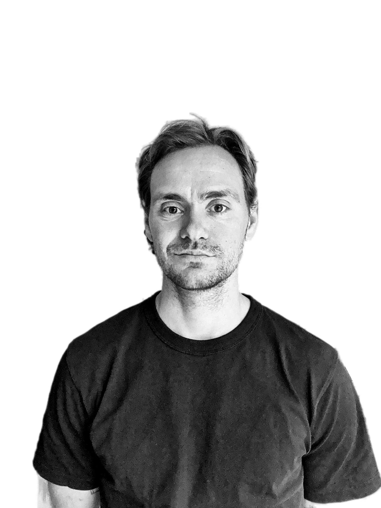

Mads Buciek

Senior product designer designing solutions for scaling SaaS and enterprise software.
steadyTraining app, iOS concept
Training that fits your week
A weekly plan that bends around energy, calendar and family, and counts consistency instead of streaks.


PulseDesign system health, SaaS concept
Prove your design system is worth it
One view of where the system is used, where Figma, Storybook and code drift apart, and what it saves.
Danfoss Ally, concept redesign
A thermostat app, rebuilt around rooms
Two taps instead of four. One settings screen instead of three. For iPhone, iPad and an iOS widget.

Better VQ, iOS concept
Skip the line.
Book a time for airport check-in and security instead of a place in the queue. One booking, three directions.


RenovAI
Describe the job. Get the shopping plan.
An AI renovation assistant that shows its reasoning before anything reaches the cart.

60:00
30 days of landing pages
A random photo, sixty minutes, one finished page. Every day for a month.